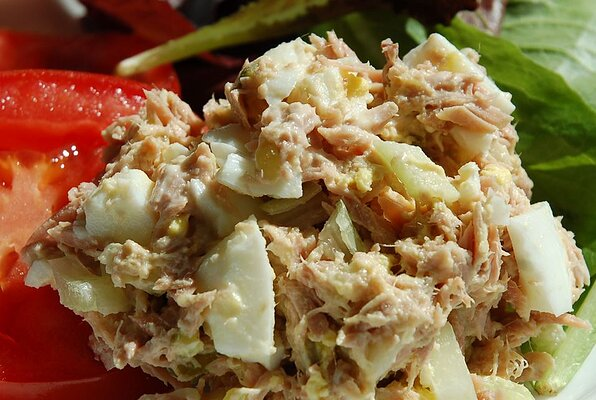

Salad Recipe

You want a healty diet that comes with a fishy situation? you come to the right place!
Ingredients
-
1 egg
-
1 (5 ounce) can tuna, drained and flaked
-
3 tablespoons mayonnaise
2 stalks celery, chopped
-
2 tablespoons sweet pickle relish
-
1 pinch ground black pepper
Steps
-
Place egg in a saucepan and cover with cold water.
-
Bring water to a boil and immediately remove from heat. Cover and let egg stand in hot water for 10 to 12 minutes
-
Remove from hot water; cool for 5 minutes. Peel and chop into bite-sized pieces.
-
In a medium bowl, mix together tuna and mayonnaise. Mix in egg, celery, relish, and black pepper.